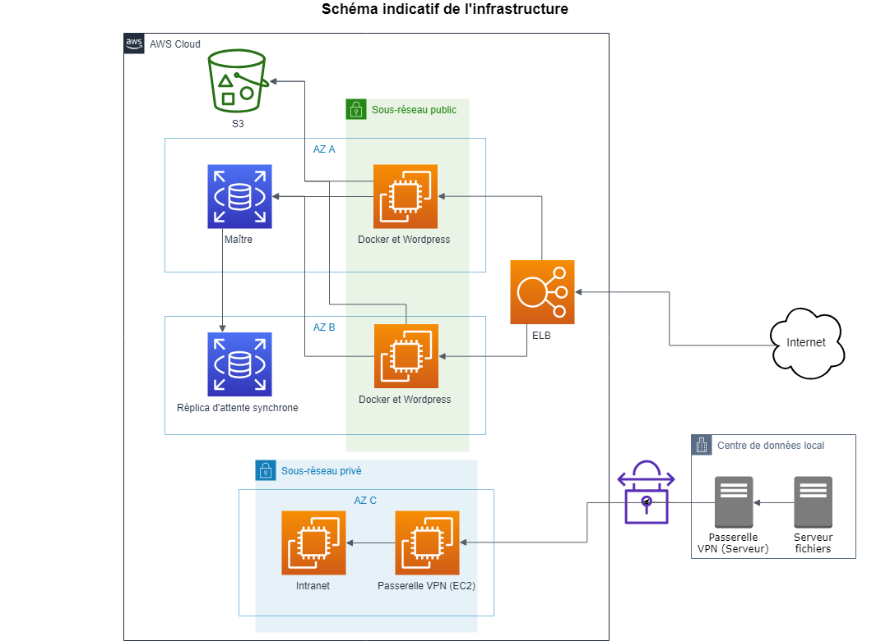
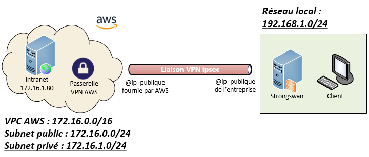
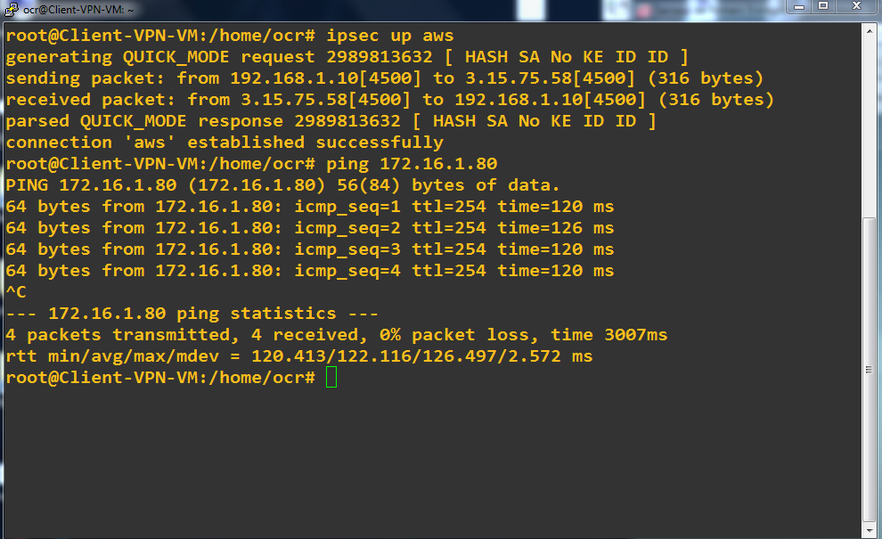
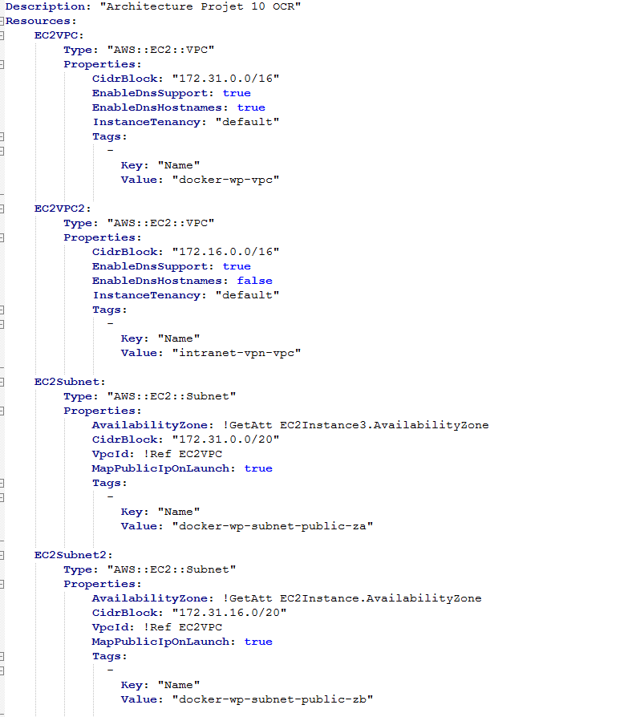
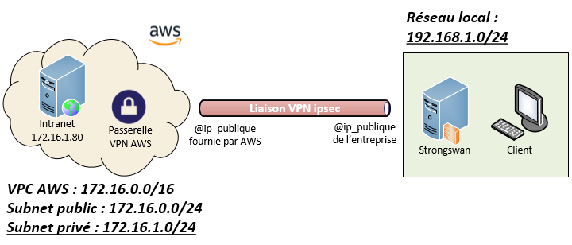
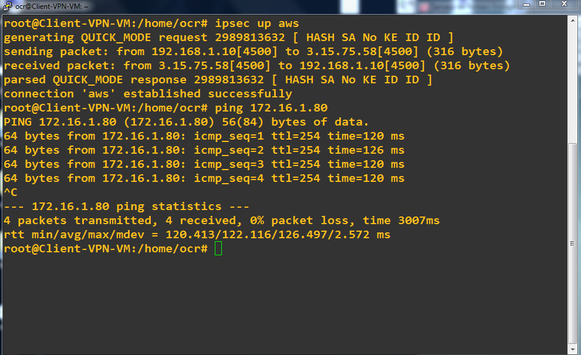
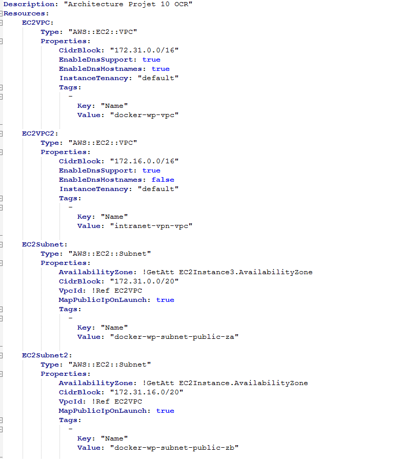

Architecture IT AWS
Création d'une Architecture optimisée dans le cloud en load balancing et réplication de données synchrones. Choix des serveurs triés par localité en fonction du prix et des besoins pour créer l'ensemble en redondance dans différente zones de disponibilité. Développement d'un script avec CloudFormation pour automatiser la création de l'architecture et ainsi pouvoir la répliquer si besoin.
Note : Cet article est à but indicatif et ne mentionne pas l'ensemble des processus, code source ou applications utilisés dans ce projet. Pour plus d'informations, n'hésitez pas à télécharger la documentation ci-dessous.

Présentation général du scénario
Freelance dans une petite entreprise qui se développe à l'international. L'entreprise ne dispose que de quelques machines pour la gestion de ses outils internes et pour héberger son site internet. Des incidents matériels sur le serveur de messagerie ont pénalisé l'entreprise le mois dernier. Le directeur veut éviter que la situation ne se reproduise mais réalise que fiabiliser les services en interne coûterait très cher.
L'entreprise décide donc de migrer l’ensemble de son SI vers le cloud. Les outils collaboratifs seront migrés vers Google Apps et le site de l’entreprise sera hébergé sur AWS.
L’entreprise garde simplement un serveur de fichiers dans ses locaux pour profiter de la vitesse du réseau local pour le transfert de fichiers volumineux. Ce serveur est également accessible par une liaison VPN depuis un site intranet privé hébergé sur AWS.
Réalisation de l'infrastructure
RDS pour la BDD, S3 pour le stockage médias, EC2 & Docker pour le serveur Web, ELB pour distribuer les requêtes sur les instances frontaux web ( Load Balancer ).
Compétences
 




